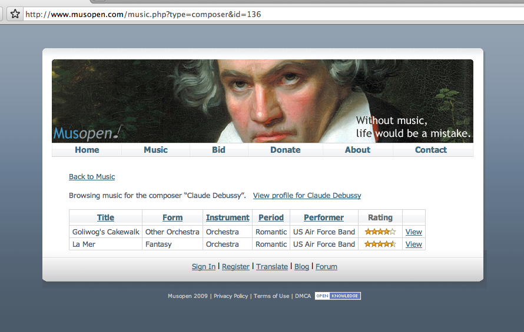
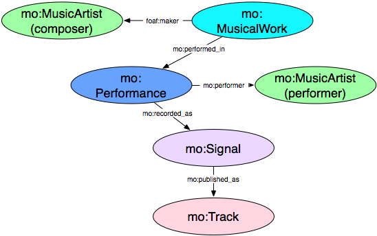
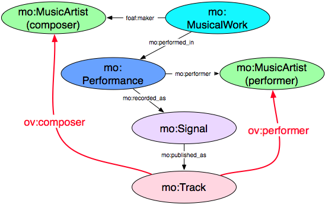
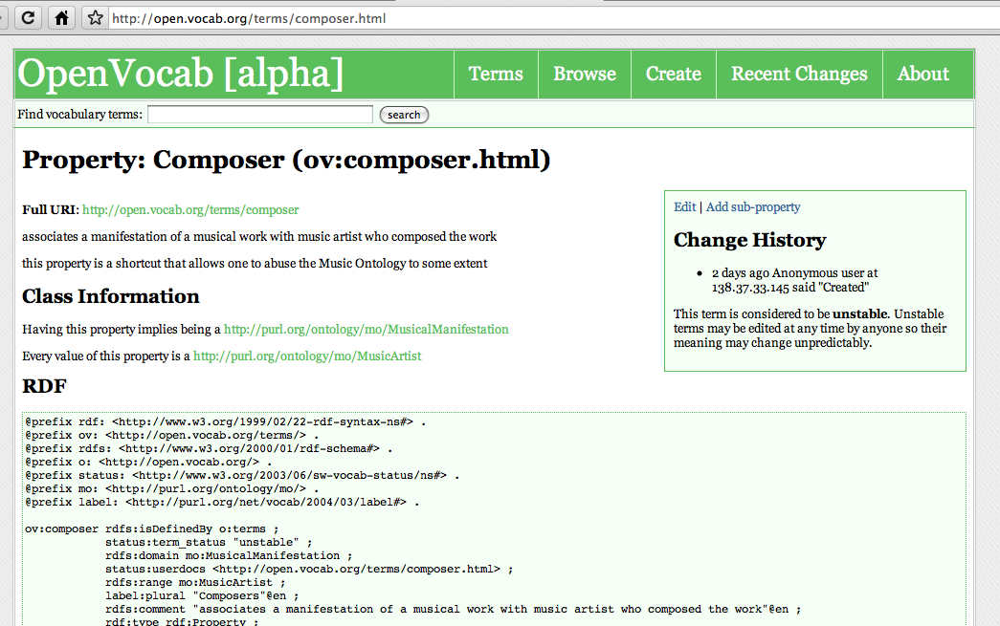
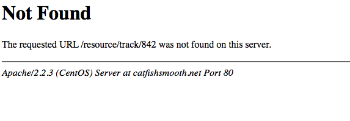
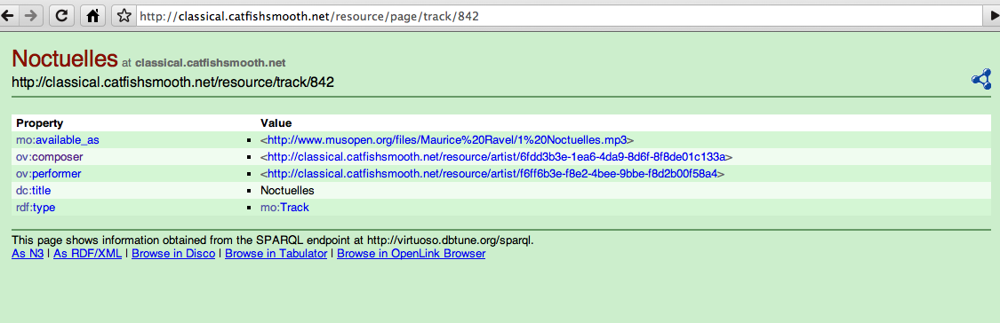

Get on the LOD bus
Hopefully at this point you're thinking
- yeah this Linked Data thing seems pretty cool
- but they could use more data, and more links
- I'm a researcher, I generate data
- maybe I can publish my data as Linked Data!
If you're not thinking this, either you weren't paying attention or we failed ;-)
The LOD cloud

Basic principles of Linked Data
TimBL has delivered unto us the four commandments of Linked Data
-
Use
URIs as names for things -
Use
HTTPURIs so that people can look up those names. -
When someone looks up a
URIprovide useful information, using the standards (RDF, SPARQL) -
Include links to other
URIsso that they can discover more things.
this encourages the re-use of your data in wonderful and unexpected ways
6 Steps to publishing LD
Tom Heath from Talis has outlined the following steps
- Understand the principles
- Understand your data
- Choose URIs for Things in your data
- Setup your infrastructure
- Link to other data sets
- Describe and publicize your data
Understanding the principles
Hopefully we've covered this more or less
It really is all about applying TimBL's 4 rules to encourage re-use of data
for now let's just remember that...
- use URIs as the names of things
- use HTTP URIs so we can look them up
- provide useful RDF when things are looked up
- link to other URIs to facilitate discovery
There are plenty of manifestos and guides to read linkeddata.org is a good place to start
6 Steps to publishing LD
Cool, we understand the principles
Understand the principles- Understand your data
- Choose URIs for Things in your data
- Setup your infrastructure
- Link to other data sets
- Describe and publicize your data
Our example
What's in your data?
Next we have a good think about what are the things in our data we want to publish
- Music Artists - composers and performers
- Musical works - tracks, audio files, and sheet music
- Audio features
- Similarity statements
- Signal processing algorithms and results
Think about vocab
Try to avoid re-inventing ontologies - have a look around and see what might work
- Music Ontology
- Music Artists - composers and performers
- Musical works - tracks, audio files, and sheet music
- Audio features ontology for audio features
- MuSim for similarity statements
- VAMP Ontology for signal processing algorithms
- Look at FOAF, DC, SIOC, SKOS, GEO, and others (check your handout)
- Finally, create ad hoc terms with open.vocab.org or design your own ontology
Hacking the ontology
MO is great but maybe we want some shortcuts
Hacking the ontology
We use open.vocab to create some ad-hoc terms
We can define these terms in OV
Note this is abuse of MO
We're short-circuiting FRBR
This will shock and appall Yves
But anyone can say anything on the Web of Data
if you're gonna hack, hack it responsibly using open.vocab - this way all our terms dereference and we still obey rule 3
6 Steps to publishing LD
Cool, we understand our data
Understand the principlesUnderstand your data- Choose URIs for Things in your data
- Setup your infrastructure
- Link to other data sets
- Describe and publicize your data
Let's mint some URIs
choosing URIs for your data is arguably the most important step
Of course we'll use HTTP URIs
in case you weren't sure
and remember cool URIs don't change
Mind the namespace
Use a namespace that you control
- Bad - we don't control classicalarchives.com
- http://www.classicalarchives.com/composer/2329
- http://www.classicalarchives.com/composer/2329/person
- Good - we do control the catfishsmooth.net
Abstract away from implementation details
try to keep the URIs free of clutter such as file extensions
Hash or Slash
Decide whether you want hash or slash URIs
This is really a matter of preference but probably better to stick with one or the other
Note if you have a very small dataset, the hash URI gives you the option of publishing a flat file (which is really easy)
Common URI patterns
| http://dbpedia.org/resource/New_York_City | ← Thing |
| http://dbpedia.org/data/New_York_City | ← RDF data |
| http://dbpedia.org/page/New_York_City | ← HTML page |
| http://revyu.com/people/tom | ← Thing |
| http://revyu.com/people/tom/about/rdf | ← RDF data |
| http://revyu.com/people/tom/about/html | ← HTML page |
| http://www.bbc.co.uk/music/artists/db4624cf#artist | ← Thing |
| http://www.bbc.co.uk/music/artists/db4624cf.rdf | ← RDF data |
| http://www.bbc.co.uk/music/artists/db4624cf.html | ← HTML page |
note these URIs have been cut short to fit on this slide
6 Steps to publishing LD
Cool, we've picked out some cool URIs
Understand the principlesUnderstand your dataChoose URIs for Things in your data- Setup your infrastructure
- Link to other data sets
- Describe and publicize your data
a quick note on RDFa
RDFa is RDF embedded in HTML
RDFa is an increasingly popular way to publish Linked Data
- Web developers can simply add a few tags to their existing HTML and have structured data
- For example Drupal 7 outputs RDFa by default
- In fact these slides contain some RDFa (try parsing index.html)
- We're don't really have time to cover RDFa today - instead we're focusing on setting up a triple store and publishing large amounts of data
- There are plenty of nice RDFa Primers to read if you want to learn more
Back to our infrastructure
Way of the hash # (no conneg)
If you have a rather small and static dataset (like an ontology)
and you've decided to use a hash URI system (or slash and mod_rewrite)
it's easy!
now only one HTTP request is needed to grab all your data
(good if it's small, bad if it's large)
Way of the slash and the 303
Linked Data content negotiation can be a bit tricky (ask the BBC guys)
but don't worry
There's plenty of tools already out there to help
we'll discuss a few of them shortly...
First, setup our triple store first, then worry about the rest
Triple store are RDF databases
There are several really good open-source triple stores
- Openlink's Virtuoso - used in DBpedia and dbtune.org/myspace, really full featured and mature
- Garlik's 4Store - very quick and scalable, simple to setup and use
- D2R Server - allows one to map a relational DB to RDF, used in dbtune.org/musicbrainz
- Joseki built on the Java-base Jena
- Sesame from openrdf
- and there are several others
We're using 4 Store
In our example we're using 4Store
Our workflow is rather simple:
- Create an RDF serialization
- Load the RDF file into the store
Some more details
We use various Python scripts to generate various bits of the RDF
We use Sonic Annotator to generate audio features RDF
4Store gives us several options loading the RDF including a command line utility
$ 4s-import mytriplestore /path/to/myfile.rdf
Apache + 4Store and we're almost there!
but...
Oh dear!
when we look up http://classical.catfishsmooth.net/resource/track/842 we get:
that is not cool
We can do dereferencing
We've picked out cool URIs and just dumped them in our 4Store
but they don't dereference
don't worry, Pubby is a good solution
it's a Java-based server app that pulls RDF descriptions from a SPARQL endpoint and handles content negotiation in a nice Linked Data fashion
caveat: Pubby doesn't actually work with 4Store "out of the box" we had to do some hacking because 4Store can't handle describe queries (yet)
It's working
get RDF with curl:
$ curl -I -H "Accept: application/rdf+xml" \
http://classical.catfishsmooth.net/resource/track/842
6 Steps to publishing LD
Cool, we've got our infrastructure
Understand the principlesUnderstand your dataChoose URIs for Things in your dataSetup your infrastructure- Link to other data sets
- Describe and publicize your data
Linking to music resources
When we're talking about music and Linked Data we're almost always talking about MusicBrainz
they provide URIs for artists, tracks, and albums
If your dataset deals with any of these things, you will want to create
owl:sameAs links to Musicbrainz URIs in your dataset
<http://classical.catfishsmooth.net/resource/artist/123>
owl:sameAs
<http://musicbrainz.org/artist/123> .
GNAT and gnatlib
luckily there are some tools to help
- GNAT - GNAT is Not Another Tagger - links audiofiles to MusicBrainz by ID3 tag or fingerprint
- gnatlib - provides the same graph-matching lookup in a Python library
- It's also possible to take a MusicBrainz DB dump, build some Lucene indexes and use these locally for matching - we've got some code, but it's really ugly and not released
- sameAs.org - a Web resource that can suggest sameAs resources
6 Steps to publishing LD
Now we've just got to publicize our data
Understand the principlesUnderstand your dataChoose URIs for Things in your dataSetup your infrastructureLink to other data sets- Describe and publicize your data
Publicize
Help others discover and index your data
- Ping Sindice and pingthesemanticweb.com
- Provide a voiD description of your Data Set
Apply a license or waiver to your data set
- Protects consumers of your data => encourages reuse
- Creative Commons is probably not applicable
- Use the Open Database License (ODbL) or release into the public domain by applying PDDL or CC0 waivers - see http://opendatacommons.org/